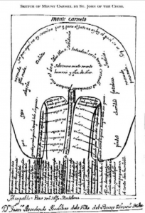

The following is the second installment of a three-part series. The first can be found here.
What Does Lacan Mean When He Says That Spiritual Direction is a Demand for Truth?
Lacan is first clear in stating that spiritual direction was a demand for truth. It is telling that he does not equate it with a demand for knowledge. Truth for Lacan is to be understood as an interruption into one’s field of meaning-making, as opposed to being just another object of meaning and knowledge to be located and scrutinized within it. Consequently, Lacan locates knowledge and meaning on what he called the register of the imaginary (the ego). The role of the analyst is to shatter the imaginary illusions which plague desire:
The analyst’s art must, on the contrary, involve suspending the subject’s certainties until their final mirages have been consumed. And it is in the subject’s discourse that their dissolution must be punctuated[1].
One can suggest here that Lacan understands older forms of spiritual direction not regarding a search for theological certainty, but precisely as a type of interruption to these symbolic and imaginary coordinates. He reflects this elsewhere:
When I speak about mystics, I am speaking simply about the holes that they encounter. I am speaking about the Dark Night, for example, which proves that, as regards what may be unitive in the relations of the creature to anything whatsoever. [2]
One can locate the value of the Dark Night of the Soul for Lacan insofar that his conception of desire is contradictory and difficult rather than “unitive.” Desire paradoxically aims at the object of desire and knowledge which causes the subject to face the contradictions and difficulties of its own existence as any such knowledge and subsequent fulfillment is revealed to be impossible. In other words, desire in pre-modern forms of spiritual direction, went beyond the psychologism and experientialism later attributed to it.
What does Lacan Mean When He Says That Spiritual Directors Embody the Cruel Personification of the Other?
In the earlier paragraph, Lacan goes on to equate spiritual direction with what he calls a ‘cruel personification of the Other.’ Here, Lacan could be drawing a parallel between the analyst and the pre-modern spiritual director. In his formulation of what he called the analysts discourse, the role of the analyst was to take the place of what he called obje,t a[3] This entails that the analyst plays the role of the object-cause-of-desire within the analysand’s psychic economy. This object is that which is unconsciously desired but also unconsciously reviled. Therefore, it is the object of transference par excellence. In other words, in the analytic process, the analyst, in the strictest sense, becomes a cruel personification of the Other, so as to reveal the truth of the analysand’s desire.
This cruel personification of the Other is also found in much of the work of the work of the earliest spiritual directors; the desert fathers and mothers. Ward explains that during the fourth century with Christianity becoming the religion of the Roman Empire through Constantine, the eschatological dimension Christians found themselves living had ebbed away only to reveal a life which was alienating in another way[4]. The pushing of the early believer, to the cusp of society upon which she stood to wait for the inevitable promise set down in scripture, was now being pulled back into a reality that held no conflict between the world they lived in and the world to come [5].
Thus, believers felt that their faith was polarised between the promise of the New Jerusalem and a state accepted Christianity which annulled that promise. This angst of being-in-the-world affected them in such a manner that they felt a call to retreat to desolate places, places which harked back to the earlier interpretation of the world as a ‘way[6].’ They were, in essence, ‘returning’ to what they believed was the authentic message of Christianity. They captured this pure desire in their bodies via direct engagement with desolation in order to transform it. The desolate landscapes of places such as Palestine, Arabia and especially Egypt became destinations in which the ascetic came to consider their relationship to the divine[7]. These desert dwelling spiritual directors were then sought out by other believers[8].
To seek out a spiritual director was to seek out someone who also embodied this cruel landscape, someone who had internalized it and transformed it. One can detect that there was repetition and transformation of the incarnational logic of suffering, death and resurrection. It is, therefore, no accident that Lacan has also implied that the work of the analyst is much like the spiritual director in the desert insofar that they also embody the horror of the real[9] along with later saying that the analyst literally embodies death:
This means that the analyst concretely intervenes in the dialectic of analysis by playing dead…either by his silence where he is the Other with a capital O, or by cancelling out his own resistance where he is the other with a lowercase o. In both cases, and via symbolic and imaginary effects, respectively, he makes death present[10]
However, we can also understand this reference to the desert to encapsulate not just the personage of the analyst but also the inherent logic of their discourse as Richard Boothby notes:
Genuine discourse includes an openness to getting lost or waylaid. This essential waywardness of the signifier, linked to what Lacan calls “the incessant sliding of the signifier,” binds the functions of speech to the experience of death. Carried along by the stream of signifiers, the speaking subject can at any moment be delivered over the falls. Entrance into the signifying chain replays the essential paradox of the encounter with death: the only certainty is the presence of uncertainty[11]”
Similarly, the pre-modern spiritual director who wandered the desert was one who came to terms with the radical indeterminacy of their abode. What we have here is a “non-spiritual, non-direction”[12]. It is a method of disorientation rather than orientation. This sense of disorientation can be found in the Juanist diagram of the Ascent of Mount Carmel.
John of the Cross also unfurled upon Mount Carmel the “ascent” of his discourse and he has drawn the map of this Dantean heaven in the form of a fantastic body, the lungs of which chant (like biblical verses) “neither this nor that”…. a body divided by the central ravine in which the”nada” (“nothing, nothing, nothing, nothing”) is repeated, its base covered with a vegetation of writings that become more rarefied as they go up [13].
In the truest sense of the term John dis-orientates us, he shows us that the Way to Mount Carmel is ultimately a way which throws us off the path by which we usually orientate ourselves.[14] Even at the level of just glancing at his sketch one is ultimately left with a sense of disorientation at its strange complexity. One cannot separate the spiritual direction of this topography of anxiety and disorientation. To forget or ignore this was to become swallowed up by desolation[15].
The threat of death was always tied up with this landscape and how it could destroy subjectivity at any moment. Similarly, for Lacan, the analyst must never forget that they too are surrounded by the indeterminate desert of the signifier. Like the desert, language presents us with the false hopes of mirages. They plague us with illusions of determination and wholeness:
Let me simply say that this, in my view, constitutes an objection to any reference to totality in the individual[… ]Psychoanalysis is what clearly relegates [this] to the status of mirages[16].
The analyst must resist the urge to to turn language into something precise and stable. He must not fill the void of the desert with the false plenum of signified:
If the psychoanalyst is not aware that this is how speech functions, he will experience its call [appel] all the more strongly; and if emptiness is the first thing to make itself heard in analysis, he will feel it in himself, and he will seek a reality beyond speech to fill the emptiness[17].
To fill this void with meaning, is in essence, to shut down the operations of desire and to shift the analysand back into the register of the imaginary and therefore close up the unconscious in the false certainty of the ego.
What does Lacan Mean When He Says That Spiritual Direction Was a Method for Clearing out the Affections?
Turning back to the earlier paragraph, Lacan states that these early spiritual directors did a good job of clearing out ‘affectations’. This is striking as when we think of modern spiritual directors today, we usually think of the practice as being focused directly on feelings and affectations. However, Lacan is saying the absolute opposite! Indeed, in the past, these desert-dwelling spiritual directors were remarkably reticent in the advice they gave. From a modern perspective, this approach would be antithetical to the friendliness and emotional warmth of the contemporary spiritual director. In stark contrast to the discourse of modern practitioners, the language of the early spiritual directors was marked by an austere oracular linguistic tradition. They were rooted in an oral, oracular tradition that valued the concise, the immediate, and the provocative:
The apothegmata or “sayings of the Fathers remain as an eloquent witness to the simplicity and depth of this spiritual guidance. Disciples often traveled for miles through the wilderness just to hear a brief word of advice, a “word of salvation” which summed up the judgment and the will of God for them in their actual concrete situation. The impact of these “words” resided not so much in their simple content as in the… action of the Holy Spirit[18].
In contrast to the oracular apothegmata, we have what is known as the logismoi. The latter means “images with thoughts”[19]. The logismoi plagued the desert fathers during their solitude in the desert. It was the continuous chain of obsessive conscious thought that distracted them from their desire[20]. Accordingly, these images and thoughts plagued the practitioner, while the apothegmatha were words which were aphoristic and designed to break the obsessional search for meaning through the logismoi. ‘Give us a word Father’ was the formula used to introduce the apophthegmata or sayings of these pre-modern spiritual directors[21]. Often the response was little more than a single word, a teaching rich in ambiguity and suggestiveness, serving to disturb as frequently to inspire [22].
It is only by a sparse linguistic intervention which almost “punctuates” the novice’s discourse through which the dirctee can realize that the answer to the truth of their desire lies not in some knowledge of the Abba. Nor does it lie within some internal emotional object. Rather, it lay in the fragmented connection between their intentions, thoughts, sense of self, and its relationship to an untameable, excessive Grace[23]. In Seminar XVI Lacan describes the role of Grace[24] in these terms:
The measure in which Christianity interests us, I mean at the level of theory, can be measured precisely by the role given to Grace. Who does not see that Grace has the closest relationship with the fact that I, starting from theoretical functions that certainly have nothing to do with the effusions of the heart, designate as[…]the Desire of the Other[25].
One can automatically detect a similarity in Lacanian Psychoanalysis with its practice of oracular statements in the course of analysis[26]. The whole practice centered on creating ambiguity in language to allow space for the Other (the unconscious) to appear as the third term which mediates the intrasubjective relationship between analysts and analysand. It is important to note that he explicitly states that Grace cannot be reduced merely to ‘effusions of the heart.’ Grace is not on the side of the imaginary in terms of phallic jouissance[27]. Instead, it is associated with the question posed to us by the Other in the form of the symbolic[28]. Grace, therefore, concerns the silent judgment at the end of time (the supreme other) and our inability to fundamentally answer in response to the judgment of the Other in the here and now therefore associated with “non-knowledge.”
What Does Lacan Mean By Saying That Psychology Previously Only Approached Spiritual Direction through a Spyglass?
Returning to the paragraph above, we can see that Lacan states that this forces psychoanalysis to evolve in a region which academic psychology has hitherto explored only with a spyglass. This last reference to spy glass is telling. In this sentence, Lacan opposes psychoanalysis to academic psychology. However, in his native French he does not say spyglass, he says ‘lorgnette’ which is a feminine noun and means ‘opera
glasses.’
“Et ceci suffit à faire évoluer le psychanalyste dans une région que la psychologie de faculté n’a jamais considérée qu’à la lorgnette[29]”
This is extremely suggestive as it implies that psychology approaches spiritual direction in much the same way as one views an opera singer. Here it is possible that Lacan is making a veiled comment on the masculine-feminine dichotomy that operates within psychology and its voyeuristic approach to what it considers the spiritual. According to Lacanian philosopher Rennata Salecl, the opera singer is one who is expected to deliver the sublime object of phallic satisfaction, her voice, as detached from her body. As the singer’s voice reaches its pinnacle, her voice embodies the ‘Holy’ for the masculine listener.
Moreover, if this process fails, the woman is reviled for not delivering this pure object of total enjoyment[30]. One can see this interpretation can be applied to the ‘psychologization of religion’ we see during the 19th century. During this time there was a transition whereby the spiritual or mystical was taken up into the hands of psychology with William James demonstrating that spiritual experience, as a psychological phenomenon, was the true core of all religious institutions[31].
William James psychologization of ‘experience’ entails that liturgy, dogma, symbols, and rules are understood as being a mere arbitrary secondary element[32]. As stated this is perspective shared by Carl Jung[33]. The pure object of “experience” is extracted from the body of the institutions which bore it[34]. Furthermore, by opposing psychology to psychoanalysis Lacan is articulating that psychoanalysis differs in its relation to this “experience.” For Lacan, psychoanalysis should focus on those structures which form an experience rather than the experience themselves:
The straw of words only appears to us as straw insofar as we have separated it from the grain of things, and it was first the straw which bore that grain[35].
Reflecting this in discussing the place of the ‘affect’ in psychoanalysis Lacan states the following:
By the same token, it allows us to criticise the ambiguity that always dogs us concerning the notorious opposition between the intellectual and the affective[…]The affective is not like a special density which would escape an intellectual accounting. It is not to be found in a mythical beyond of the production of the symbol which would precede the discursive formulation[36].
The point here is that one cannot get directly to the ‘affect.’ According to Lacanian psychoanalyst Bruce Fink, feelings can sometimes mislead us-they lead us down strange paths and sometimes disguise the larger causal structural reality at hand[37]. In other words, psychoanalysis concerns itself with how the coordinates of our language (what he calls the intellect) shape our emotional dispositions. Lacan understood the unconscious not just as a dark continent of “emotion,” “drives” or “archetypes:
These archetypes, these reified symbols which reside in a permanent manner in a basement of the human soul, how are they truer than what is allegedly at the surface? Is what is in the cellar always truer than what is in the attic?[38]
By introducing this concept, he problematized the split between the affective and the intellect. The dividing line between them is not as robust as one would like to imagine. What Lacan is at pains to articulate is that we should always stay aware of the participatory reality of language and not allow the operations of the imaginary register fool us into thinking otherwise.[39] This resonates with his concept of full speech and empty speech.
Mark Murphy is a PhD student at St. Mary’s University, Twickenham, United Kingdom. He teaches philosophy and theology at St. Francis Xavier College in South London. His specialties include mystical theology, spirituality and Continental philosophy.
_________________________________________________________________________
[1] Lacan, 209.
[2] Lacan, The Logic of Phantasy: Seminar XIV, XVIII 195.
[3] Jacques Lacan, The Other Side of Psychoanalysis (W. W. Norton, Incorporated, 2007).
[4] Benedicta Ward, The Desert Fathers: Sayings of the Early Christian Monks (Penguin UK, 2003), 9.
[5] Andrew Louth, The Wilderness of God (Darton Longman & Todd, 2003), 54–55.
[6] Ward, The Desert Fathers.
[7] Thomas Merton, The Wisdom of the Desert, 1st ed. (New York: Sheldon Press, 1960), 3.
[8] Thomas Merton, Thomas Merton – Spiritual Direction and Meditation (Read Books Ltd, 2013).
[9] Paul Roazen, The Trauma of Freud: Controversies in Psychoanalysis (Transaction Publishers, 2001), 328.
[10] Lacan, Ecrit:The First Complete Edition in English., 357.
[11] Richard Boothby, Freud as Philosopher: Metapsychology After Lacan (Routledge, 2015), 157.
[12] Margaret Guenther, Holy Listening: The Art of Spiritual Direction (Rowman & Littlefield, 1992).
[13] Michel de Certeau, The Mystic Fable, Volume One: The Sixteenth and Seventeenth Centuries, trans. Michael B. Smith, New edition edition (Chicago: University of Chicago Press, 1995), 134.
[14] Cross, The Collected Works of St. John of the Cross.
[15] Brinkman argues that modern spiritual direction and self-help in its drive toward absolute orientation ultimately loses itself.“In an accelerating culture, we are supposed to do more, do it better and do it longer, with scant regard for the content or the meaning of what we are doing. Self-development has become an end in itself. And everything revolves around the self…A vicious circle ensues. We turn inwards to master an uncertain world, which seems less and less certain as we become more and more isolated, finding ourselves with only our self orientation for company” Sven Brinkman, Stand Firm: Resisting the Self Imrovement Craze, 1st ed. (Cambridge: Polity Press, 2017), 22–23.
[16] Lacan, Ecrit:The First Complete Edition in English., 242.
[17] Lacan, 206.
[18] Merton, Thomas Merton – Spiritual Direction and Meditation, 13.
[19] Grace Brooks, “Five Orthodox Words I Wish Everyone Knew,” Orthodox Christian Network (blog), September 7, 2014, http://myocn.net/five-orthodox-words-wish-everyone-knew/.
[20] The Book of the Elders: Sayings of the Desert Fathers: The Systematic Collection (Liturgical Press, 2012), 60.
[21] Belden C. Lane, The Solace of Fierce Landscapes: Exploring Desert and Mountain Spirituality. (Oxford: Oxford University Press, 1998).
[22] Lane, 167.
[23] The Book of the Elders, 138–39.
[24] For an excellent exposition on the significance of Grace in Lacan’s work see: Creston Davis, Marcus Pound, and Clayton Crockett, eds., Theology after Lacan: The Passion for the Real (James Clarke & Co, 2015).
[25] Jacques Lacan, The Seminars of Jacques Lacan XVI, ed. Cormac Gallagher (Dublin: Lacan in Ireland, 1969), VIII,1.
[26] Dany Nobus, Jacques Lacan and the Freudian Practice of Psychoanaylsis, 1st ed. (London: Brunner-Routledge, 2000).
[27] Lacan, The Seminars of Jacques Lacan Book XX: On Feminine Sexuality The Limits of Love and Knowledge 1972-1973.
[28] Dylan Evans, An Introductory Dictionary of Lacanian Psychoanalysis, 2nd ed. (East Sussex: Routledge, 1996).
[29] Jacques Lacan, Écrit (Paris: Éditions Du Seuil, 1966), 456.
[30] Renata Salecle, “The Silence of Feminine Jouissance,” in Sic 2: Cogito and the Unconcious, 1st ed. (North Carolina: Duke University Press, 1998), 175–96.
[31] William James, The Varieties of Religious Experience: A Study in Human Nature. (London: Longmans, Green and Co, 1902).
[32] My position on spiritual direction should be contrasted with the work of Raul Moncayo who argues that Lacan is to be based directly in the same category of William James with his focus on the centrality of religious experience. Moncayo utilises James’ methodologies to explore ‘experiences of the real’ which, he argues, lie at the centre of Zen Buddhism. I would argue that to talk about the ‘experience of the real’ at this level leads to the register of the imaginary. Moncayo, The Signifier Pointing at the Moon.
[33] Jung, Man and His Symbols.
[34] This psychologization of the spiritual is probably referenced by Lacan in the same paragraph as ‘the Cancer’ which psychoanalysis has taken little responsibility for.
[35] Lacan, The Seminars of Jacques Lacan Book VII: The Ethics of Psychoanalysis 1959-1960, 45.
[36] Lacan, The Seminars of Jacques Lacan Book I: Freud’s Papers on Technique 1953-1954, 57.
[37] Bruce Fink, Against Understanding, Volume 2: Cases and Commentary in a Lacanian Key (Routledge, 2013).
[38] Lacan, The Seminars of Jacques Lacan Book I: Freud’s Papers on Technique 1953-1954, 267.
[39] Lacan also suggests that this logic of participation is found in medieval theological formulations:
“In the Freudian field, the words notwithstanding, consciousness [ego] is a characteristic that is as obsolete to us in grounding the unconscious […] (that unconscious dates back to Saint Thomas Aquinas)—as affect is unsuited to play the role of the protopathic subject, since it is a function without a functionary. Starting with Freud, the unconscious becomes a chain of signifiers that repeats and insists somewhere (on another stage or in a different scene, as he wrote), interfering in the cuts offered it by actual discourse and the cogitation it informs” Lacan, Ecrit:The First Complete Edition in English., 676.It is possible to suggest that Lacan is alluding to the Old Theological arguments during Aquinas time. Aquinas was arguing against other formulations of Theology and Philosophy which aimed to create strict separations between the created and creature, faith and reason, intellect and affect. Similarly for Lacan the ego only has its existences by participation in the greater linguistic field of the unconscious and it can’t just be simply reduced to a mere emotion.